007-docker发布镜像
定制自己的镜像: docker commit -a="[作者]" -m "[备注]" [镜像id或名称] [起的镜像名字]
1、如何定制自己的nginx
- 启动nginx镜像
首先启动nginx镜像:
docker run -di -p 8080:80 --name myNg nginx
用进程式的方式启动，宿主机的8080端口映射到nginx镜像
通过docker ps可以查看镜像情况
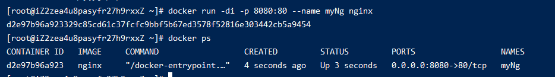
- 通过
http://59.110.21.75:8080/访问如下
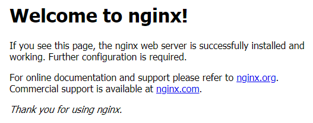
- 进入该镜像，修改页面内容
# 进入镜像 docker exec -it d2e97b96a923 /bin/bash# 复制index.html到宿主机 docker cp d2e97b96a923:/usr/share/nginx/html/index.html /root/download/
修改html并保存
vim index.html
把修改后的index.html复制到镜像
docker cp /root/download/index.html a5e176992b40:/usr/share/nginx/html/index.html
4. 在访问`http://59.110.21.75:8080/`，结果如下:

5. 修改我们的镜像修改好了，准备做成自己的镜像
```shell
docker commit -a="xiaoming" -m "my nginx image" a5e176992b40 zett/nginx
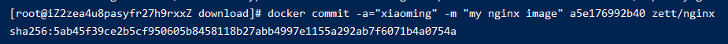
执行docker ps
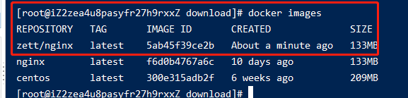
- 再启动刚才制作好的镜像
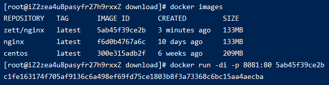
- 访问
http://59.110.21.75:8081/即可看到我们自己做的nginx
2、推送到docker仓库
先到docker仓库注册个账号
执行docker login，输入账号密码在Linux上登录下
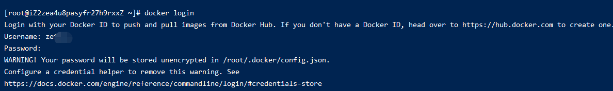
执行docker push [镜像名称]:[版本号]推送上远程仓库
docker push zett/nginx
注意: 在dockerHub上我的账号名是zettle，而这里的镜像前缀是zett。直接push的时候会提示
denied: requested access to the resource is denied，如下:
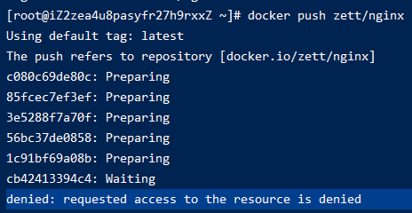
这种时候，要先执行下docker tag [本地镜像名称] [将要存的真正dockerHub的镜像名]
# zett/nginx 是本地的镜像名称
# zettle/nginx 是因为我的账号名叫zettle
docker tag zett/nginx zettle/nginx
docker tag会在本地再复制出一个镜像
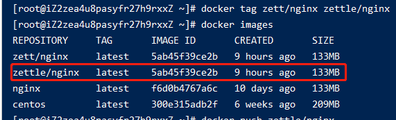
然后再执行docker push zettle/nginx即可
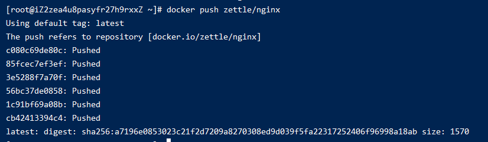
3、从远程pull我们自定义的镜像
先把本地的镜像删除掉
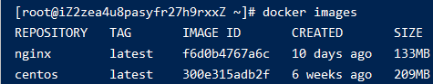
执行docker pull zettle/nginx
现在就和平常一样启动就可以
2、推送到阿里云仓库
上面推动到的是docker的官方仓库由于是国外的，push和pull的速度都很慢。
想要快的话，就用阿里云的镜像
镜像的账号密码就是登录阿里云的账号密码
2.2 创建一个属于自己的命名空间
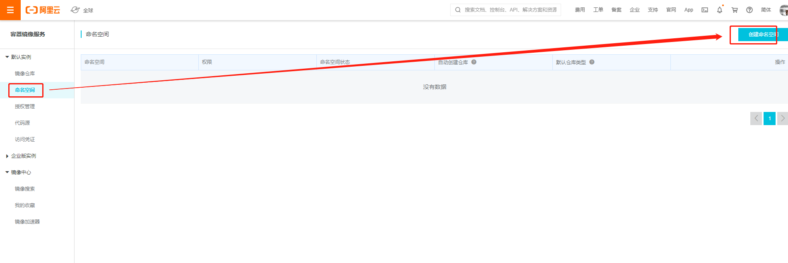
2.3 创建一个属于自己的仓库
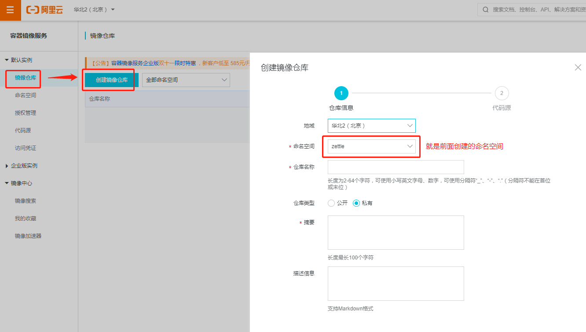
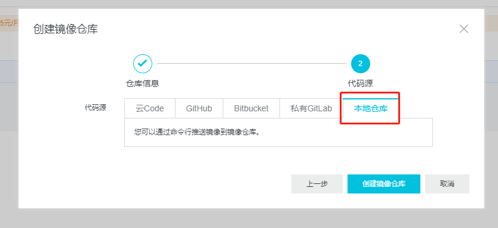
创建好后如下图
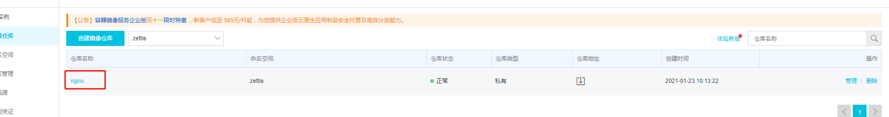
点击进入可以看到怎么发布的详细步骤
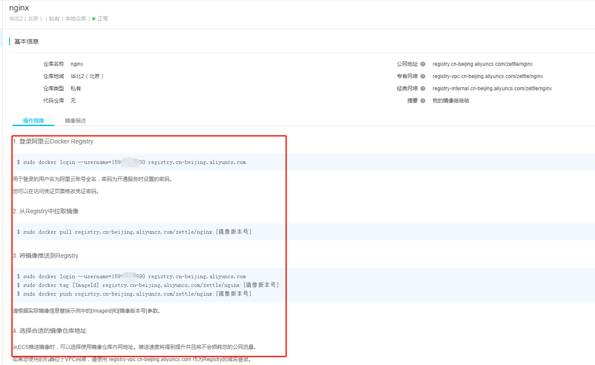
首先登录
# 登录 159XXXXXXX
docker login --username=159XXXXXXX registry.cn-beijing.aliyuncs.com
然后打tag
# 5ab45f39ce2b为本地镜像的id
# 为其打个tag命名为registry.cn-beijing.aliyuncs.com/zettle/nginx
# 1.0.0 为版本号
docker tag 5ab45f39ce2b registry.cn-beijing.aliyuncs.com/zettle/nginx:1.0.0
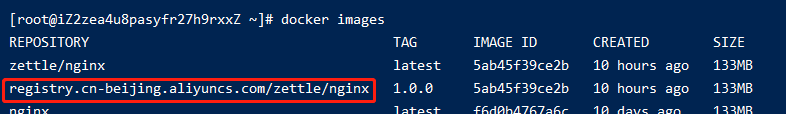
最后push
docker push registry.cn-beijing.aliyuncs.com/zettle/nginx:1.0.0
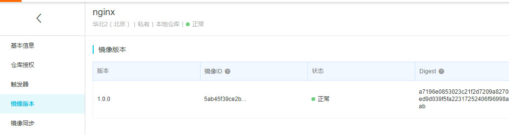
当想要pull的时候，执行下面
docker pull registry.cn-beijing.aliyuncs.com/zettle/nginx:1.0.0